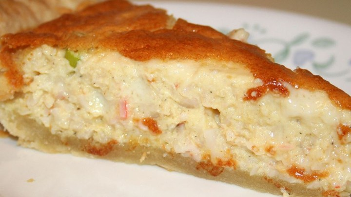
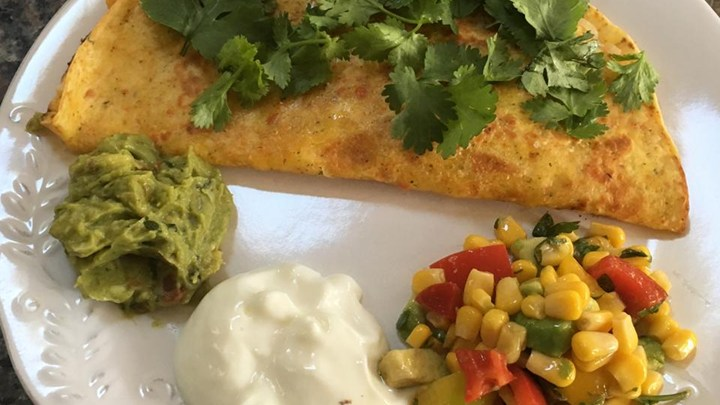
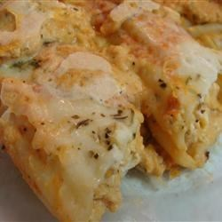

Crab Quiche
AllRecipes.com

Prep Time
10 minutes
Cook Time
50 minutes
Servings
8 servings
Ingredients
- 1 9in deep dish frozen pie crust
- 4 eggs
- 1 cup heavy cream
- 1/2 teaspoon salt
- 1/2 teaspoon black pepper
- 3 dashes hot pepper sauce (e.g. Tabasco), or to taste
- 1 cup shredded Monterey Jack cheese
- 1/4 cup grated Parmesan cheese
- 1 8oz package imitation crabmeat, flaked
- 1 green onion, chopped
Chicken Manicotti Alfredo
AllRecipes.com

Prep Time
30 minutes
Cook Time
1 hour
Servings
8 servings
Ingredients
- 3 skinless, boneless chicken breast halves
- 1/2 cup distilled white vinegar
- 1 cup olive oil
- 1 clove crushed garlic
- 1 12oz package manicotti pasta
- 6 tablespoons butter
- 2 cups heavy whipping cream
- 1/4 cup ground nutmeg
- 1 teaspoon ground black pepper
- 1 1/2 cups grated Parmesan cheese
- 1 teaspoon salt
- 1 pint part-skim ricotta cheese
- 1 egg
- 1 tablespoon chopped fresh oregano
- 1 tablespoon chopped fresh marjoram
- 1 tablespoon chipped fresh basil
- 1 cup shredded mozzarella cheese
Shrimp Quesadillas
AllRecipes.com

Prep Time
15 minutes
Cook Time
1 hour
Servings
6 servings
Ingredients
- 2 tablespoons vegetable oil
- 1 onion, sliced
- 1 red bell pepper, sliced
- 1 green bell pepper, sliced
- 1 teaspoon salt
- 1 teaspoon ground cumin
- 1 teaspoon chili powder
- 1 pound uncooked medium shrimp, peeled and deveined
- 1 jalapeno pepper, seeded and minced
- 1 lime, juiced
- 1 teaspoon vegetable oil, or as needed
- 6 large flour tortillas
- 3 cups shredded Mexican cheese blend, divided